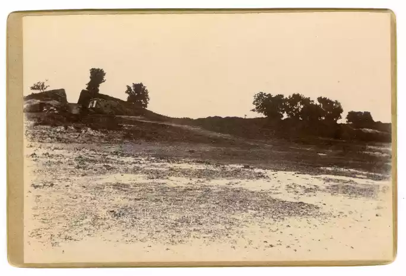
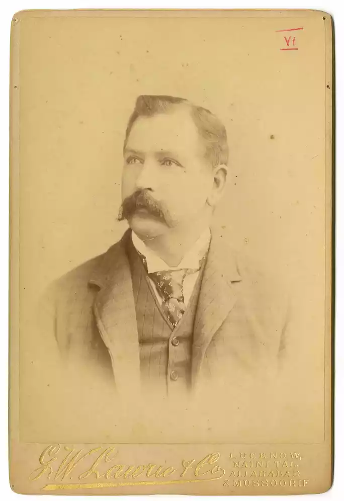
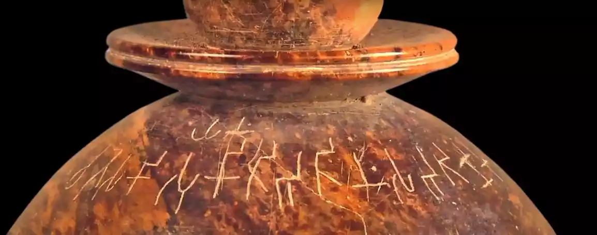
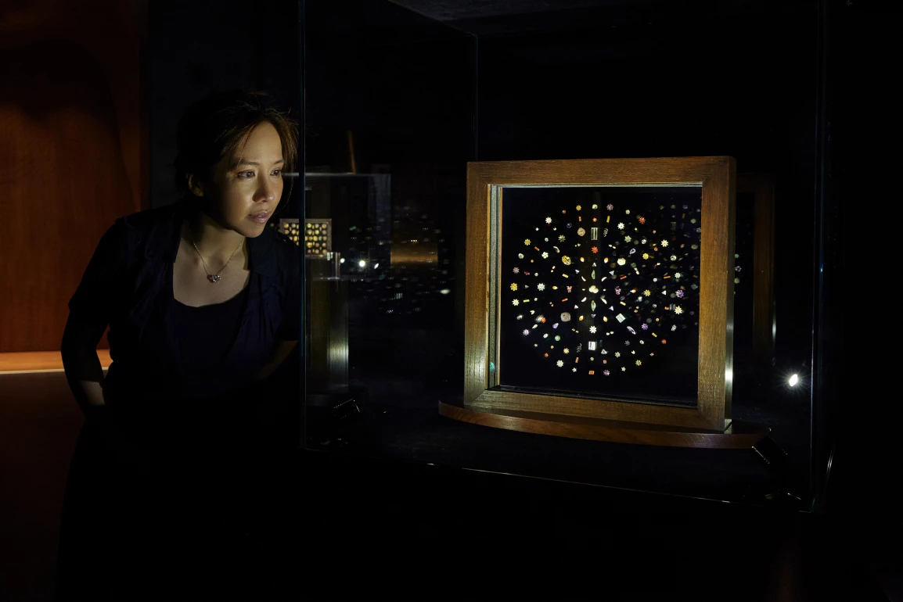
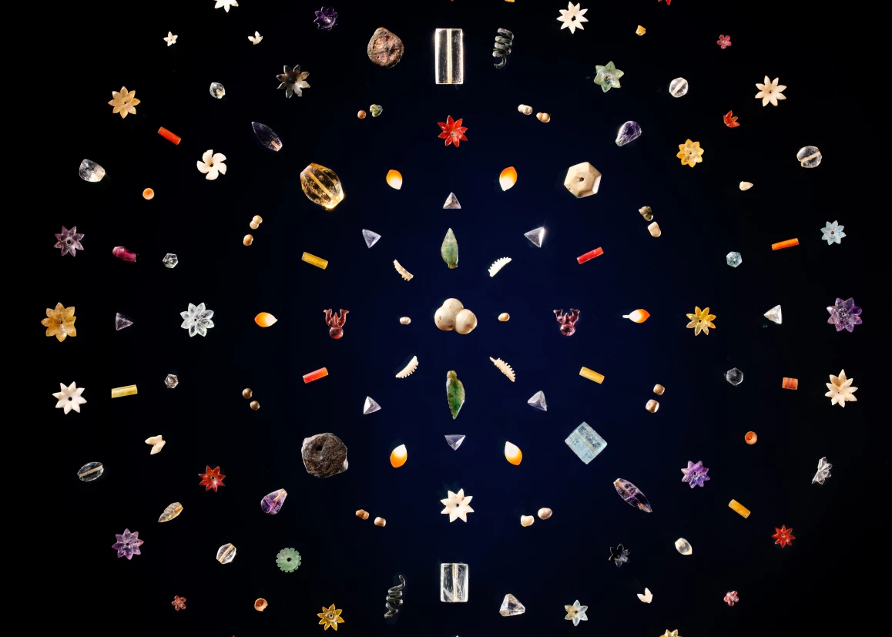
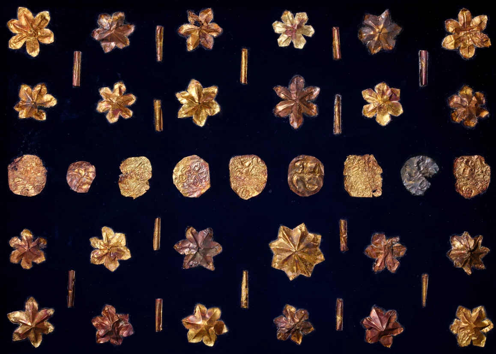
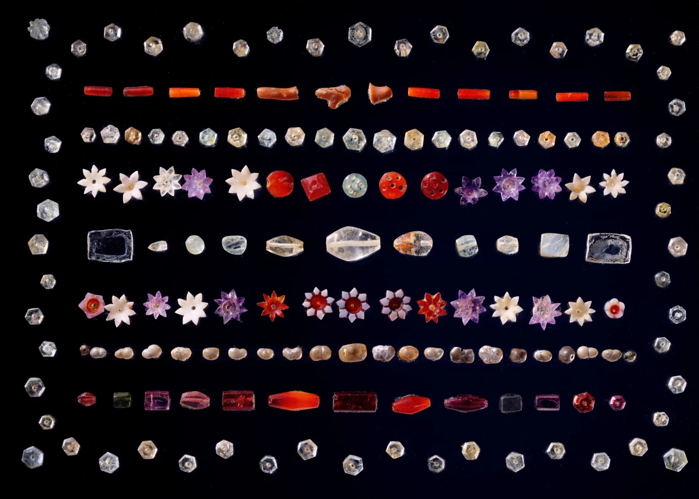

譯自 克里斯·佩沛 · Sotheby's Hong Kong · 2025年2月12日
克里斯·佩沛回顧其曾祖父發掘的比普羅瓦佛寶聖物，在過程中重拾一段有關家族傳承的故事。
大約七歲那年，我在一位叔祖父的家中，初見比普羅瓦佛寶聖物。靜靜躺在玻璃櫃中的聖物是大人之間的聊天話題，年幼的我懵懂無知，難解其奧妙。在我看來，這些寶珠如同祖母飯桌上那些冗長的印度故事，乏味無趣，我一心只盼趕快擺脫餐桌的束縛，離席嬉戲玩耍。然而，隨著年歲漸長，我對歷史的興趣日益濃厚。十二歲時，我再次造訪那棟老宅，終於開始領悟到，這些據說與佛陀舍利一同出土的微小寶珠所蘊含的深意。當時的我正沉迷於大英博物館的圖坦卡門展覽，不禁幻想挖掘一座如同金字塔般的佛塔，會是多麼興奮刺激。儘管如此，我仍未全然領會這次考古發現的深遠意義。直到後來，我選修神學作為A-Level的科目之一，才真正開始深入了解佛陀及其教義。

比普羅瓦佛塔遺址 1898年1月威廉．佩沛發掘後攝 圖片鳴謝：佩沛家族
比普羅瓦佛寶聖物先由我的叔祖父傳給他的兒子，後於2013年傳到我和我的兩個堂親手中。我從那時開始，深入研究曾祖父威廉·克拉斯頓·佩沛發掘出土這些珍貴寶珠的經過。

威廉．克拉斯頓．佩沛（1852-1936年） 約1890年代勒克瑙 G.W. Laurie & Co. 攝 圖片鳴謝：佩沛家族
我翻閱1898年的舊報章，在《路透社》、《紐約論壇報》和《明尼阿波利斯日報》上，均找到有關釋迦牟尼佛遺珍的報導。我了解到歐洲學者對歷史上的佛陀深感興趣。英國對印度的殖民統治，至今仍是我心中難以釋懷的一段歷史，讓我感到羞愧。儘管如此，在那些將文物運回英國的尋寶者之中，也不乏潛心求知之士。學者孜孜不倦地解讀幾個世紀前中國朝聖者的遊記，試圖從中找出佛陀故鄉迦毘羅衛城的蛛絲馬跡。在藍毗尼發現標誌著佛陀誕生地的阿育王石柱，更為這個謎團增添幾分神秘。而我曾祖父在比普羅瓦佛塔內發現的佛陀遺骨舍利罐上的銘文，亦引起當時頂尖古文字翻譯家之間的極大哄動。他們認為，這些舍利是佛陀荼毗後，留給釋迦族人珍藏的佛陀遺骨。

比普羅瓦佛塔遺址其中一個滑石壇罐蓋上孔雀王朝晚期婆羅米語銘文 加爾各答印度博物館 圖片鳴謝：Icon Films
這項研究為我帶來意外收穫，讓我對祖先有更深入的了解。我曾以為他們是思想守舊、抱有偏見的維多利亞時代人，但通過這些信件，我窺見到他們不為人知的另一面。他們寫信時，先從左到右書寫，然後將信紙旋轉九十度，再從上到下書寫，形成縱橫交錯的字跡，以節省郵資。我也從中得知，曾祖父的第一任妻子選擇前往印度蜜月旅行，並深深愛上了這片土地和文化，可惜天妒紅顏，染病早逝。此外，祖母對當時適用於印度婦女的土地法感到義憤填膺。我還發現曾祖父挖掘佛塔，是為了在1897年因饑荒受災的佃農提供生計。他繪製的坡道和滑輪技術圖紙亦表明他是一位訓練有素的工程師，骨子裡帶著對工程項目的滿腔熱情。曾祖父將佛寶、舍利和舍利罐悉數交予印度政府，印度政府將舍利贈予暹羅國王（拉瑪五世），所有主要的黃金和珠寶則由加爾各答印度博物館典藏。僅有少數重複的佛寶花珠被允許由我家族留存，才得以世代相傳至今。

比普羅瓦佛教珍寶於2025年2月香港蘇富比旗艦藝廊展出
自繼承比普羅瓦佛寶聖物以來，我和我的堂親一直希望能讓公眾，特別是佛教信眾，能夠透過博物館等機構展覽來免費觀賞這些珍貴文物。由於我們並非專業策展人，與博物館亦鮮有聯繫，同時還需兼顧自己的本職工作，這項工作花費了我們大量心力，其進展亦比預期更為緩慢。不過，在過去六年間，比普羅瓦佛寶聖物已在全球多間博物館展出，足跡遍布蘇黎世瑞特堡博物館、紐約魯賓藝術博物館和大都會藝術博物館，乃至新加坡亞洲文明博物館和韓國首爾國立中央博物館。另外，我們亦建立了一個名為「比普羅瓦項目」的網站，以便大家查閱我們收集的所有研究資料。我們不僅在網站上公開了曾祖父用以佐證此項發掘出土的信函，更將信函捐贈予皇家亞洲學會。
由於2019年新冠疫情對博物館日程安排造成影響，這些佛寶在魯賓藝術博物館的展出時間也比原定日程更長。參觀展覽時，我獨自一人置身展廳，得以在靜謐無聲的氛圍中，不受打擾地沉思凝視這些佛寶。我們常說成吉思汗、凱撒大帝或亞歷山大大帝在歷史上影響深遠，但若論及對地球上億萬生靈的生活信仰、宗教儀禮和行為教養產生深遠影響的人物，也就是世界各大宗教的發源者與奠基人，則屈指可數，而佛陀正是其中一位。此刻，我站在這裡，眼前正是由虔誠的釋迦族人供奉、伴隨佛陀舍利一同埋葬的珍寶，心中一股莊嚴肅穆之情不禁油然升起。



孔雀王朝阿育王時期，約公元前240至200年 比普羅瓦釋迦牟尼佛寶聖物
我不禁思忖，其他人是否亦對這些花珠懷有同樣的感觸？某次，在倫敦東區的藝術品儲藏中心（寶珠儲存地），我找到了答案。一位技術人員問我，我們正在觀賞甚麼。我們方才走過一條長廊，兩側盡是大衛·霍克尼、弗朗西斯·培根和莫奈大師的傑作，我實在難以預料，他會如何看待佛教的古老聖物。我向他解釋聖物的來歷，他聽後並未作聲，只是默默凝視寶珠。過了一會兒，他才由衷感嘆道：「真是令人嘆為觀止！」（I'm gobsmacked!），充分表達他的驚嘆和敬畏之情，也讓我明白並非只有我一人，能從這些佛寶身上感受到如此震撼人心的力量。我衷心希望，無論是否信仰佛教，世人都能感受到這些聖物所蘊含的能量。
如今，比普羅瓦佛寶聖物由我們家族守護的任務即將告一段落。我希望將佛陀的遺珍託付到有緣人的手中，也盼望更多人能有機會親眼目睹這些佛寶，與兩千多年前敬製花珠的佛教信徒們產生共鳴，體會人類共通的驚嘆和敬畏，並從中領悟佛陀的智慧與教誨。